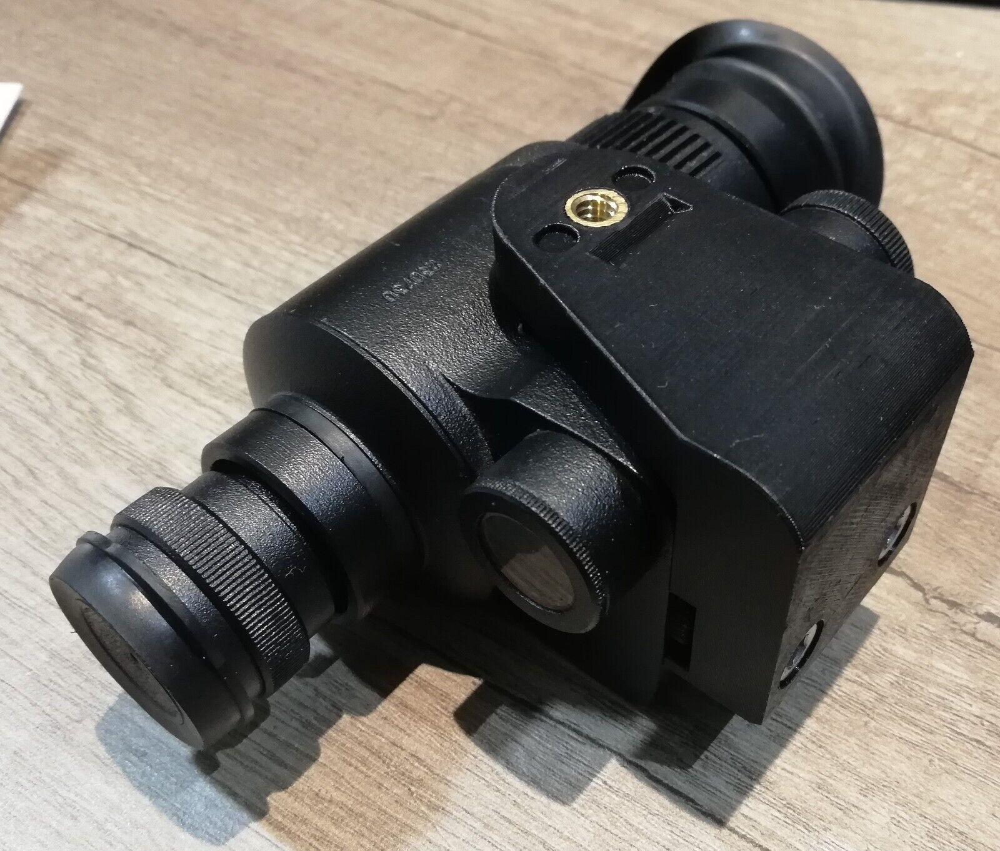
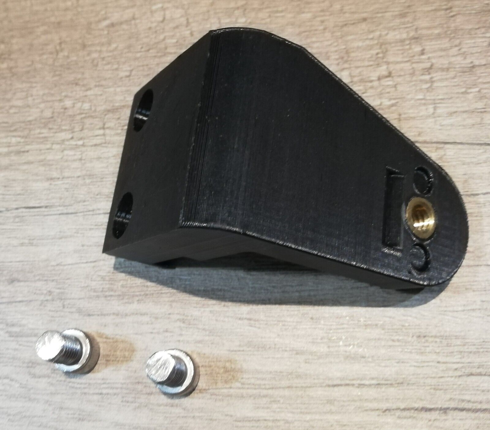
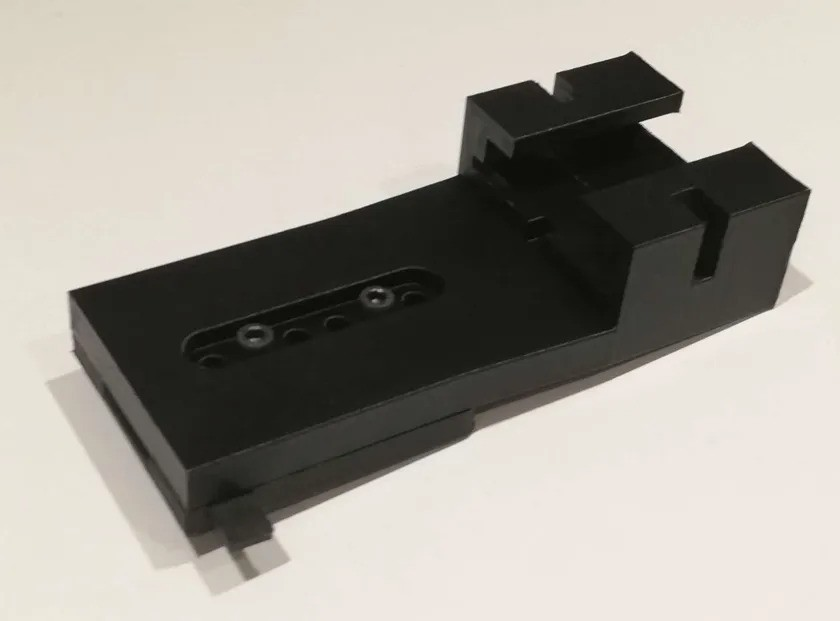
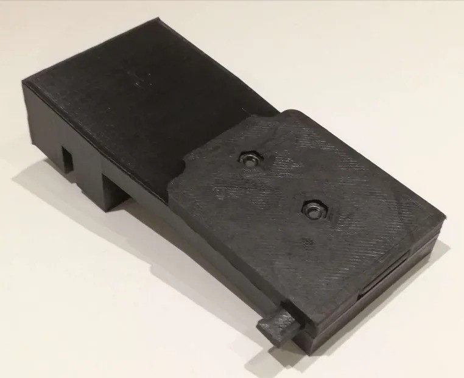
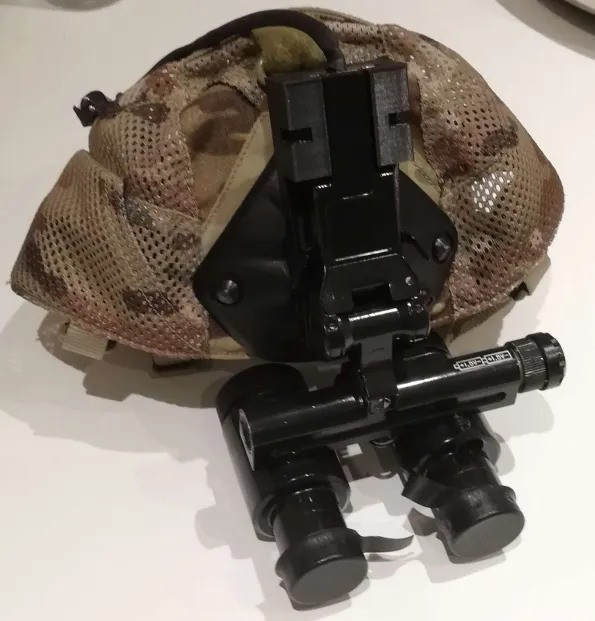
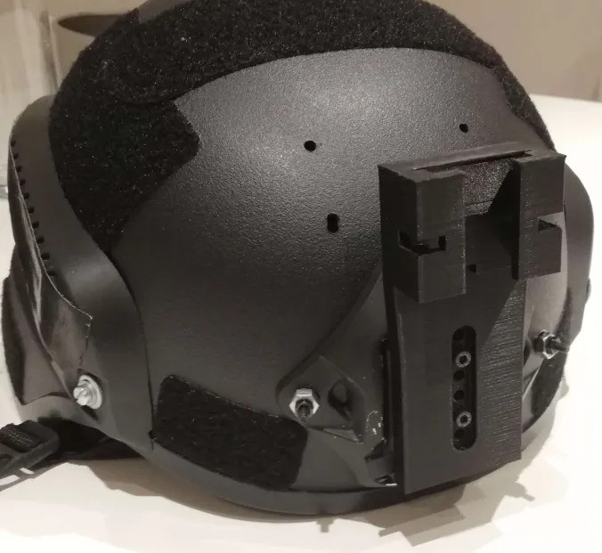

stuff you can buy from me
printed night vision adapters, made to order
ATN Night patriot to pvs14 adapter


Bolts onto your night patriot device using the accessory mounting holes already on there, lets you use standard pvs14 j arms to mount it more comfortably
GEO - NVG1 helmet shroud adapter




Adapt your geo nvg1 device from the russian aviation mount to standard helmet shrouds. Requires no modification to the device, retains auto shutoff feature. Adjustable for height only.
contact me on discord: untrust2033
printed parts are made to order, there will be a lead time of at least a few days depending on complexity and parts availability. ship from uk